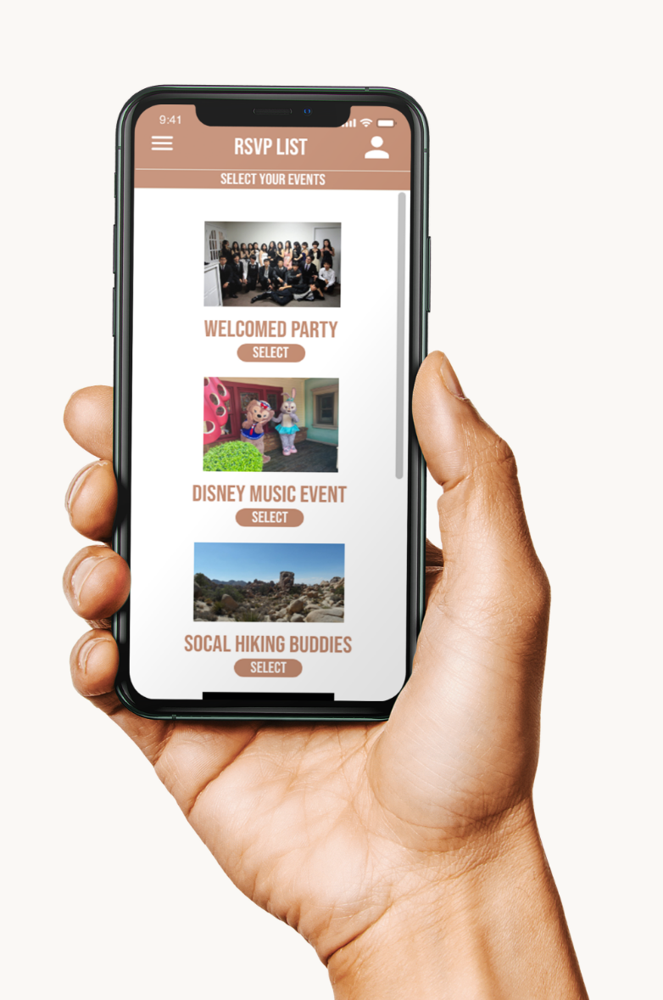
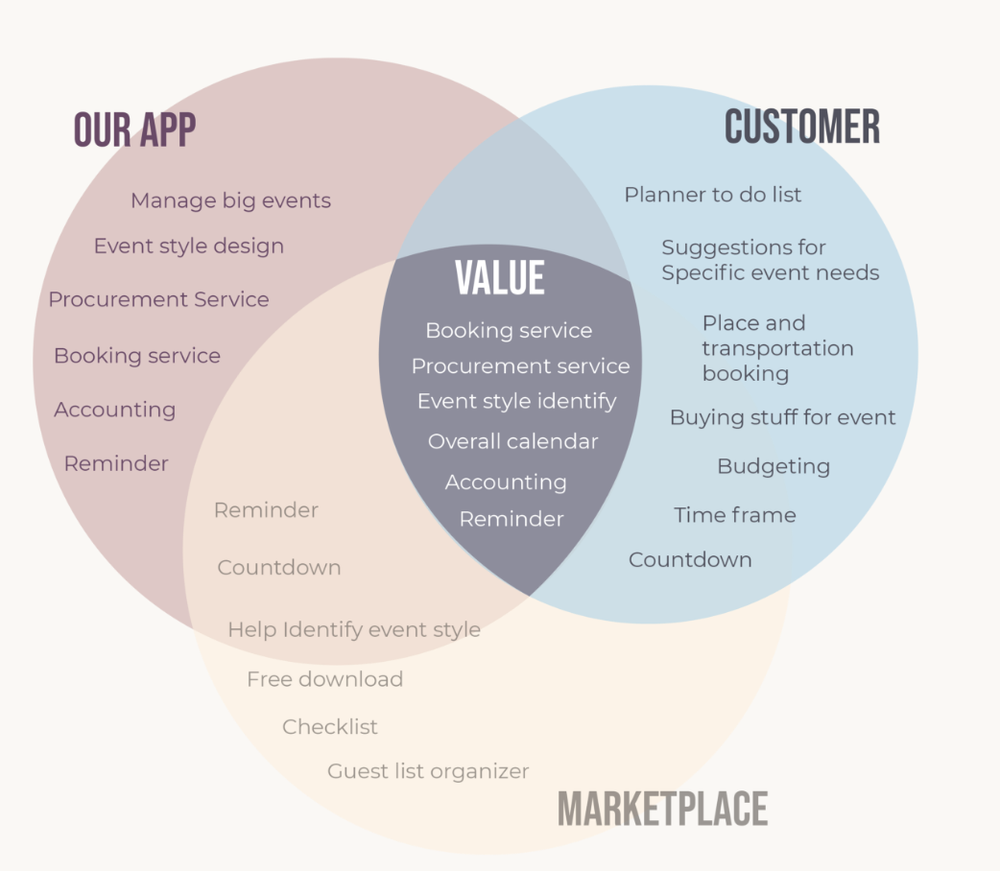
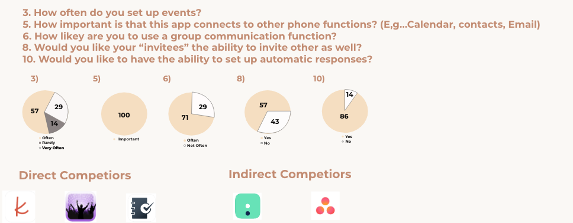
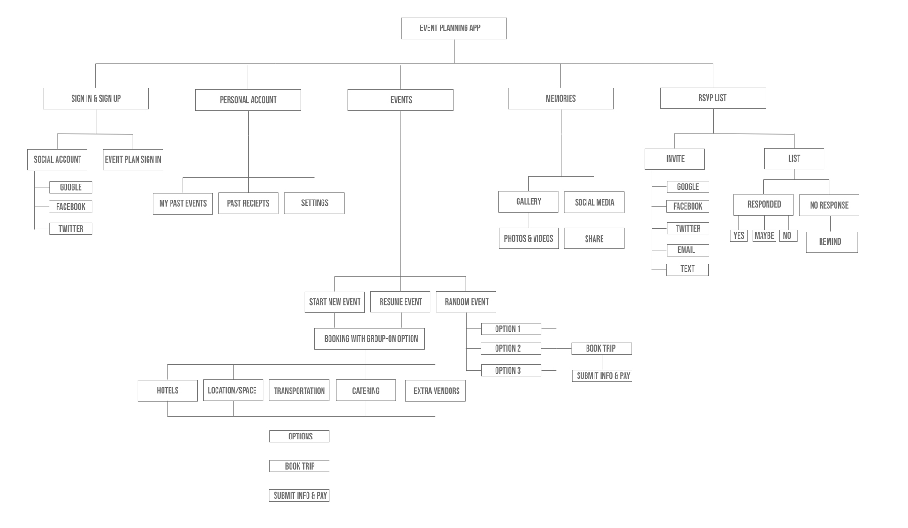
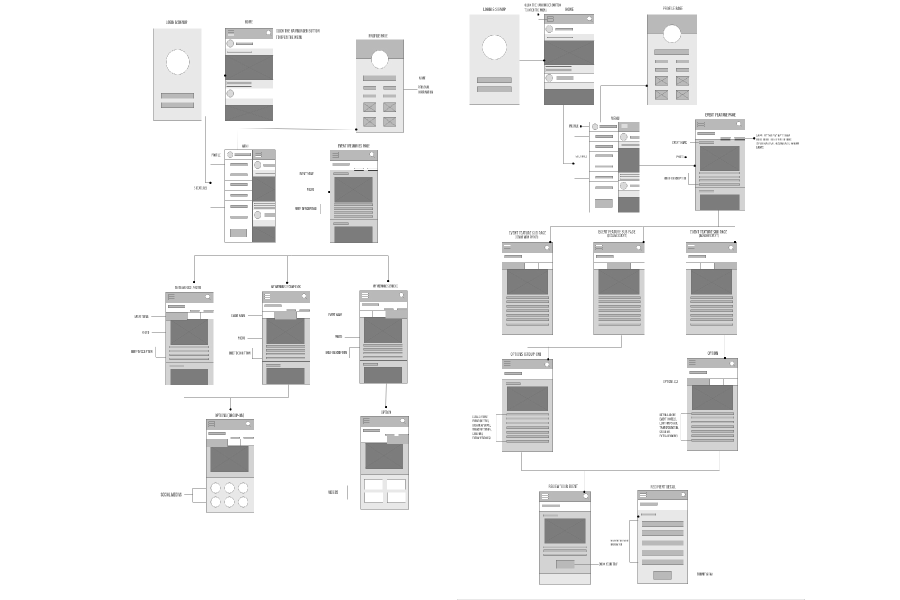

Elite Events
Are you ready to plan a party or gathering? Are you ready to plan it in a more efficient way that makes it easier for you? Let Elite Events take the stress of planning and let you enjoy the excitement!
Elite Events is an application where you can easily plan events/gatherings. Choose from your contacts, or social media to invite all your friends and family. See how much easier planning can be and still be a success!

01
About Project
Why we are better
Because we offer all the detail for organizing group for party or event, such as procurement, booking, budgeting, checklist, reminder and so on.

Why we are believable
Because we combine the service of procurement and booking, also procurement and booking, also provide the flow path of event planning for people who are not good at management.
02
Research
Target audiences
Age ：College students, white-collar workers ,based young and middle-aged（16～45）
Elite Designs looked into direct and indirect competitors for this event planning app. We were able to discover the strengths and weaknesses of multiple different kinds of planning apps. We found that we should develop an app that would make planning easier across the board.

03
Personas
User personas were directed towards young women who love to party and have good time with friends and
family. They want an easier way to plan their social events on a cheap budget.


Customer Journey Map

04
Task Flow
Elite Designs created their app to have five major functions which include memories, ratings, random
generator, booking, and rsvp.

Priority Plotting Chart

Task Flow of Features


05
Information Architecture
Information architecture and wire flow gave the group the foundation on what pages to develop for the
future
homeworks.
informative architecture

Wireflow

10
User 1 (Meng)
Some of the group had family and friends test the user
ability of the app through the prototype to see what
needed to be improved or fixed. We considered everything
they mentioned in their feedback so that our app would be successful.
Bottom navigations is confusing..the button icons are not matched
with what actual icons are. For example, the plus icon, “+” ,
I thought it was for adding something or creating a draft but It
brought me to the event feature screen. The bottom navigations
should be more organized and clear indications!
User 2 (Phoeby)
The pages seem to be very plain and boring. The colors look
nice but wish it had more going on with imagery. The profile
button doesn’t take me to any profile page, it doesn’t do anything.
The hamburger pop-up seems too long with empty space.
Wish the app showed me options to choose from of which kind
events I can create for example, birthday parties, weddings,
anniversaries, etc. It’s very confusing what kind of events
the app is towards, going to already made events or to create my own event/party.
The app needs a better indicator of what kind of events it was
intended for, maybe put that as a screen to choose an option.
Needs more design elements to enchase the design.
User 3 (Shanru)
The bottom navigation is too close for easy access with
one hand and one thumb. If the navigation is separated by
a certain distance, I think this problem can be avoided.
If the Event feature and Memories feature pages were originally
designed in this way, it is recommended to use some kind of
scroll bar to indicate, because the picture on this page only
shows half of the content, it is easy for users to feel the
absence of content and begin to lose interest in it.
User 4 (Melanie)
For the bottom of quick button, can show animation when touch,
also use different color to show the current feature of icon.
Make sure every page of home button link to home page.
11
Members Names & Role/Task In This Project
Organized all homework files, Redesigned web page, Created interactive prototype, Added top navigation, coded part 5-6, added few css:
Meng
Chang
Revisions and last checks of all homework files, created organization and wrote body copies for
presentation, favicon, coded parts 0-2 and added portfolio link, merged all GitHub files for final presentation & assigned jobs
for project : Phoeby Poplar
High-Fi Prototype display mockup: Melanie Wu
Priority Plotting Chart design, Journey Map design, High-Fi Prototype base design: Lite Chen, Adam McPheeters
Usability testing & user feedback design,high-Fi Prototype inside phone mockup: Shanru Li
Priority Plotting Chart design, Journey Map design,
High-Fi Prototype base design:Lite Chen